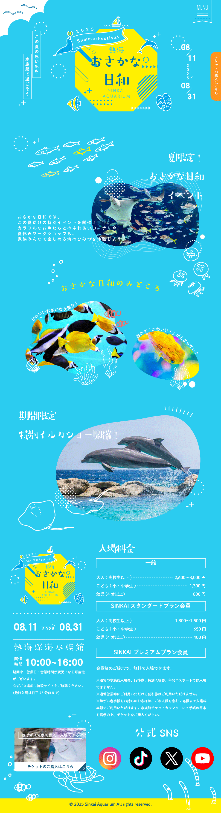

デザインカンプ - クリックで拡大
制作背景
架空の水族館「熱海深海水族館」の夏季限定イベント用ランディングページです。
子供や子連れの家族をターゲットに、水族館のワクワク感と魅力を伝えることを目指しました。
明るく楽しい雰囲気で、イベント情報を分かりやすく伝えることを重視しています。
概要
「2025年夏、おさかな日和サマーフェスティバル」をテーマに、
夏の海をイメージした明るく元気なデザインを制作しました。
子供たちの好奇心を刺激する、ポップでカラフルな世界観を表現しています。
デザインコンセプト
夏の海の明るさと楽しさを表現するため、鮮やかな水色と黄色を基調としたカラーパレットを採用しました。
魚やイルカなどの生き物のイラストを散りばめ、子供たちの想像力をかきたてるデザインを心がけています。
デザインのポイント
- 配色：夏の海を連想させる明るい水色と、太陽をイメージした黄色を組み合わせ、元気で楽しい印象を演出
- イラスト：手描き風のタッチで親しみやすさを表現。魚やイルカ、海の生き物を配置して賑やかな雰囲気に
- レイアウト：スクロールしながら情報を楽しく発見できる縦長のデザイン構成。視線誘導を意識した配置
- タイポグラフィ：丸みのある優しいフォントで、子供にも読みやすく親しみやすい印象